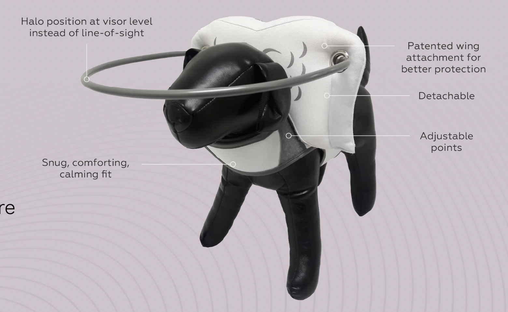
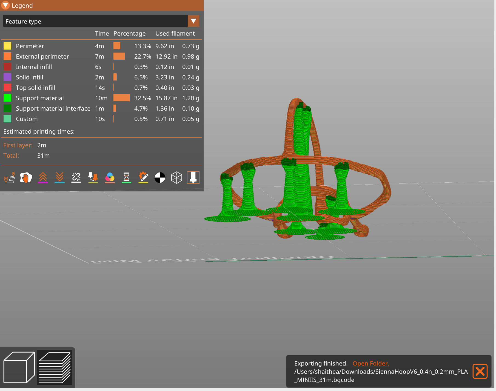

Project 5: Defining and Beginning My Final Project
Overview:
This week we formed teams for our final project. My team decided to create an open source assistive device for visually impaired dogs (and perhaps other animals?). This week was focused on preliminary research and drafting and signing a team contract to ensure an efficient and collaborative working environment. Our professors provided us with guidelines for how to approach beginning our project, which are addressed below:
1. Defining the problem: How many people experience this problem? What are the existing solutions?
Problem: blind and visually impaired animals need a way to navigate obstacles with freedom and without hurting themselves. We hope to relieve visually impaired animals of stress that comes with navigating these obstacles.
Existing Solutions:
Material: water resistant vinyl tubing with gauge wire inside
Problems: Cost barrier
An existing solution that is available in the market is Muffin’s Halo. Muffin’s Halo is made with water resistant vinyl tubing that has a gauge wire inside along with a cushioned wing attachment. However, the biggest issue with this product is that there is a high cost barrier.
https://www.thingiverse.com/thing:4733643 Another solution is “Sienna’s Blindness Safety Hoop”. Instead of attaching to a cushion by the head, it attaches with some sort of harness. The original maker uses PLA. This design is much more accessible.Part 2: How current solutions work: What are the science and/or mechanics behind these solutions?
The existing solutions help to prevent painful bumps from running into walls, furniture and other obstacles with a decorative halo to safely alert and redirect the user when they run into a hard surface. They are both made to be lightweight, comfy and adjustable, but the design allows the force of an impact to be distributed in a way that does not harm the animal. In addition, Muffin’s Halo additionally uses cushioned wings to protect your dog’s delicate neck and shoulder area, and “Sienna’s Blindness Safety Hoop” relieves some of the cost border.
Part 3: Defining Customer Profile for who experiences this problem: Who are they? What do they do over the course of the day? Where will you find them?
Our customers are both visually impaired animals and their owners/ the institutions that take care of them such as shelters and veterinary clinics, centers, and schools. The animals need to safely navigate their surroundings so that they can eat, sleep, relieve themselves, play, and socialize. The people have many other tasks in their lives besides the animals they are taking care of, so granting visually impaired animals independence to move freely and safely positively impacts their work/life balance.
Part 4: Fabricating open source hardware solutions to see what already exists in order to incorporate the best features for existing designs into our R&D process for product development.
We only had time to fabricate one open source hardware solution for our target problem. Here is the link to the design. The limits of this design are that it is not very structurally sound and is prone to failing when printing even with a raft and supports. It is also only suitable for very small dogs, and cannot be easily adapted for larger dogs.
Part 5: Defining the key features of our product
Part 6: Defining how we will measure success of whether those features work: What does success look like? What will our testing methodology look like? How are we defining and building a testing protocol?
When testing our product, the measure of success will be the strength and durability of the product. In order to assess this we will test:
Tensile strength → how much you can bend it until it breaks?
What speed can you hit a wall with before it breaks?
And how far back does it bounce after hitting a wall?
Parts 7 and 8: Holding our first team meeting and doing some "house-keeping"
In this meeting we delegated tasks, defined team roles, and filled out a team collaboration agreement.
We also discussed how our project can follow 2 Design Thinking Methods:
1. Empathize—we talked through the problem and made sure to include humane features to our design that would allow the users to still be able to perform daily tasks in relative comfort and with ease.
2. Prototype—we talked through creating multiple designs and printing them out with PLA to slowly improve the actual design before printing it using our desired material(s).
Part 9: Listing and ranking 5 potential ways to solve the problem of blind dog independent navigation
1. Get a guide dog for the blind dog
2. Halo attaches with a harness
3. Attachable mobility cane
4. Lasik
5. Mini portable fence —baby crawler style (see image below)
Part 10: Deciding if we are either working with a client and learning from them, or working to produce an open source hardware solution, and learning from the device itself.
Because it is not feasible for us to gain the proper permission to work with a dog, we are going the route of working to produce an open source hardware solution and learning from the process itself.